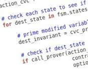

Contractor Validation Tool


Contractor is an automated tool that takes a piece of software’s contract and generates a finite abstract representation of it. By analysing the resulting finite machine, the user can discover potential anomalies in the input contract such as invariants, preconditions or postconditions that are too weak, therefore allowing unwanted behaviour. Analogously, the user may find annotations that are too strong, restricting the potential implementations.
Contractor can also create abstractions for C programs. In this case, the resulting models proved to be useful in helping the user understand the program under analysis. A number of examples have shown that the abstractions created with Contractor helped finding previously unknown bugs in real-life source code.
Finally, Contractor.NET is available as a Visual Studio extension. It allows .NET developers to generate abstractions without leaving their development environment. See more info about Contractor.NET here.
The Contractor Validation Tool


Get started using Contractor in 3 steps
-
1.Download and install Contractor from here.
-
2.Follow the tutorial for contract validation or code validation.
-
3.Get sharp with more examples here.
News
-
•May 2015: Hernan Czemerinski defended his PhD thesis on protocol testing using EPAs and contractor.
-
•March 2013: we show how to use contractor to guide protocol testing at ICST in Luxembourg.
-
•March 2012: we gave a tutorial of Contractor at Bertinoro school in Italy.
-
•May 2011: we presented Contractor at the ICSE 2011 conference in Honolulu, HI.
-
•January 2011: we have released a .NET version for Contractor, featuring Visual Studio.
-
•January 2010: a new (0.40) version is available. Now Contractor accepts C source code augmented with preconditions as input, as well as contracts.